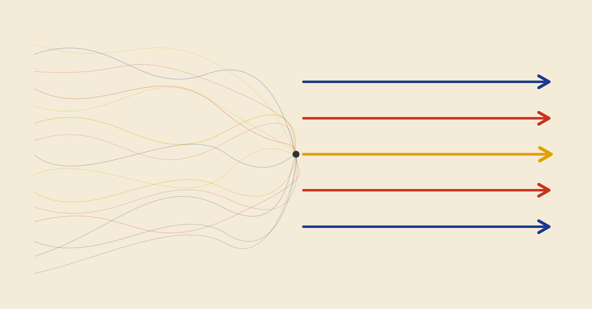

Created with help from Claude
Introduction
A $100M+ project delivery function knew everything about its individual parts but couldn't see how it was performing as a whole.
Hundreds of project requests a month, hundreds active, hundreds of people across teams and vendors — and performance measured by word of mouth. A leader asked, someone answered. The answers were accurate. They were also partial, unverifiable, and impossible to assemble into anything an executive could act on.
The firm didn't lack data. It lacked a coherent picture of its performance. That turned out to be a problem of judgement, not of instrumentation.
The trap: why "more data" fails first
The instinct is to fix a visibility gap by measuring everything: every field, every count, every dimension. But a dashboard that shows everything shows nothing. The executive who couldn't see delivery now has to infer it from two hundred indicators. The original problem has been relocated onto a screen.
More data made the picture less coherent, not more.
The discipline: judgement as restraint
The real work was the opposite of comprehensiveness. It meant thinking hard about what good performance of such a vast operation actually looks like, and how to give executives a true snapshot of delivery at any given moment.
The result was five metrics, each capturing a different aspect of delivery, each chosen for its ability to prompt action. A metric earns its place only if a leader would act differently depending on its value.
Getting there meant navigating four problems at once: technical (derive a clean calculation from messy data), operational (reflect how delivery actually behaves in the field), behavioural (a sound metric that prompts the wrong decision is worse than none), and regulatory (every figure must withstand scrutiny). The five that survived: time to delivery, labour cost, change-driven disruption, schedule adherence, and a compound commitment score, with a quality metric in development. Behind each sits a compressed chain of decisions about what to include, where to draw the line, and how to treat the awkward cases.
The twist: it was never a technology problem
Getting to those metrics meant confronting data that contradicted itself. Definitions drifted between systems. One event wore different identities in different places. The delivery clock started and stopped wherever each function decided. The task wasn't to aggregate the numbers already in hand; it was to build a shared definition of delivery across functions that had each defined it well alone but had never had to agree.
The dashboards could be built. But a substantial share of the data quality problems weren't poor systems — they were inconsistent behaviour: the same fields completed differently by different teams, dates updated in bulk at project close rather than in real time, status records reflecting what was filed rather than what occurred.
Making the measurement system reliable meant changing how several hundred people interact with the systems that feed them. The engagement quietly became a governance and culture conversation. Not a data problem; a judgement and behaviour one.
The real deliverable
The screen was the smallest part. For the first time, leadership could see how delivery was performing across the entire operation — not a product view, not a region's view, but one coherent picture spanning every team, every vendor, every project in flight. That had never existed. Not because nobody wanted it, but because no single function could see far enough across the seams to build it.
The real deliverable was the agreement beneath it: a cross-silo definition of what good delivery means, reconciled from data that had never been reconciled, expressed in a handful of metrics chosen for what they would change rather than what was convenient to count. Alongside it, a governance framework naming who owns each number and what it takes to keep it current. An operation that had been managing nine figures of delivery by testimony now had something to steer by.
How it was run
This kind of judgement can't be delivered by disappearing with a brief and returning with a finished product.
Weekly working sessions ran throughout. Early ones were deliberately open-ended — the most useful contributions were the contradictions and corrections that let the real shape of the problem surface. Later ones turned tight and granular: exact metric definitions, specific calculation choices, design decisions with more than one defensible answer. The deliverables didn't arrive as a surprise. They arrived as the formalisation of a shared position, built and revised across many conversations — which is precisely why they were accepted.
Why interdisciplinary judgement mattered
A data team alone produces something statistically sound and operationally naive. A consulting team alone produces something polished that might not survive contact with the data. The decision-grade metric sits at the intersection of the statistical, operational, behavioural, and regulatory — exactly where siloed delivery can't reach.
The value wasn't covering more ground. It was that the disciplines could meet inside a single conversation: a statistical insight tested against operational reality, examined for the decision it would prompt, checked for regulatory robustness — in one room, because the people capable of each conversation were present together.
That friction is what produces the number an executive recognises as the one that had been missing.
Not more data. Different perspectives and judgement, create a coherent picture to steer by.